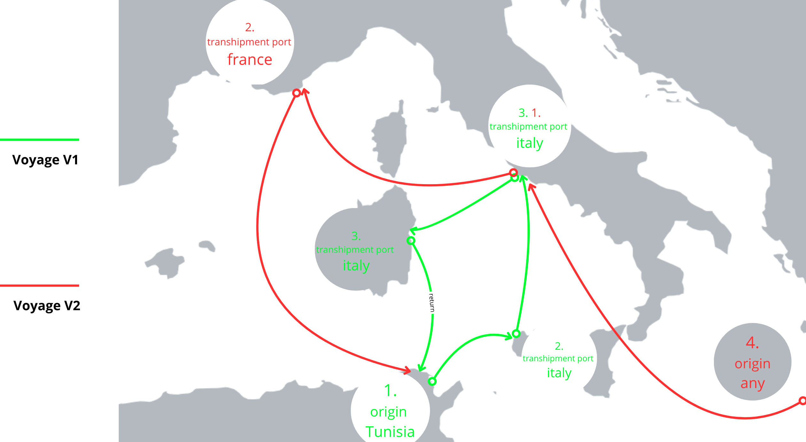
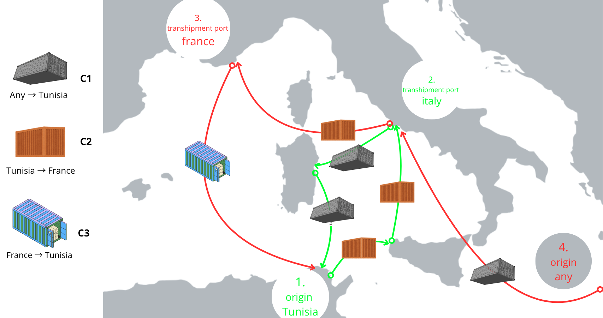
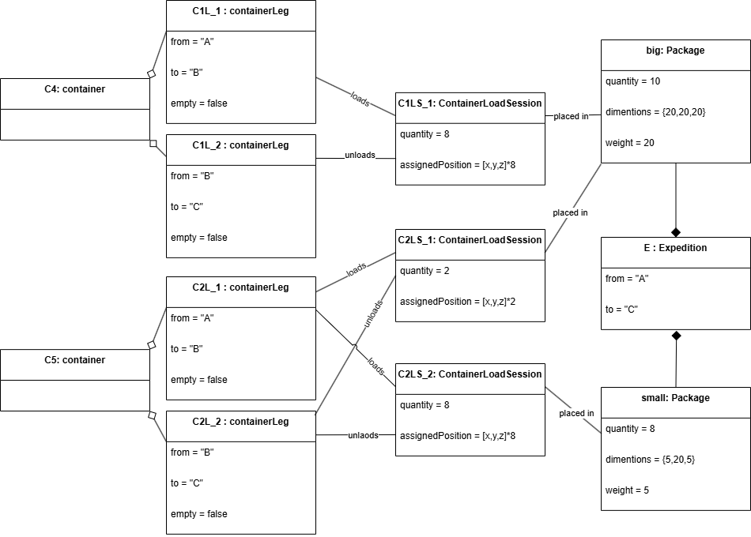
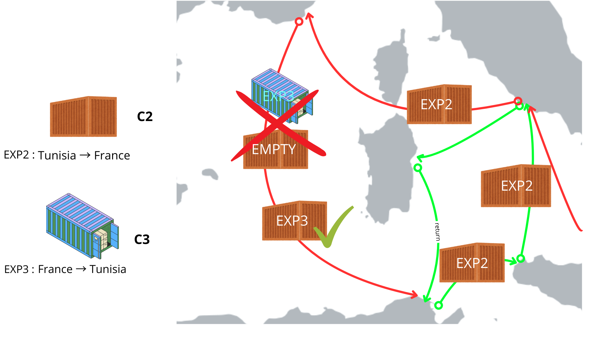
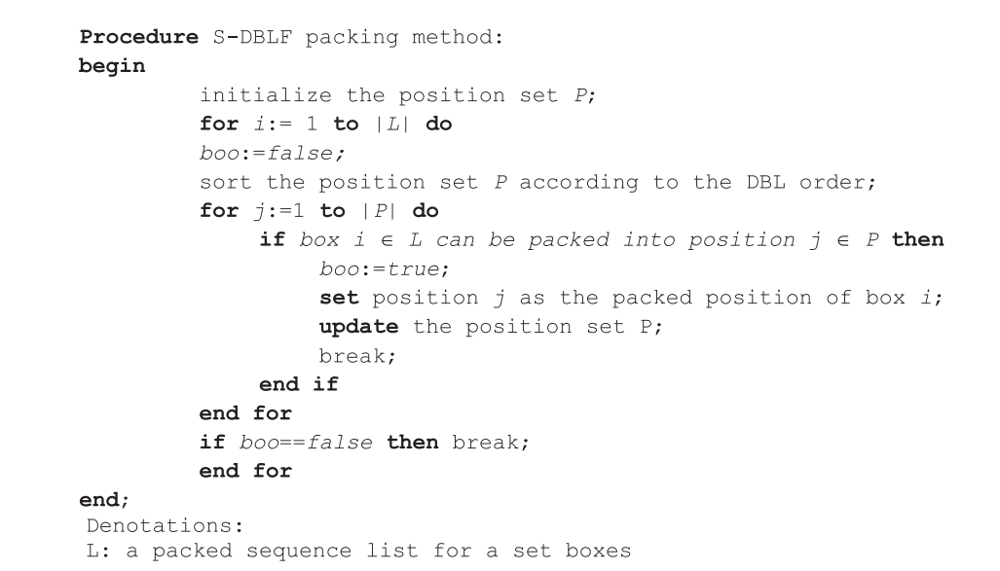
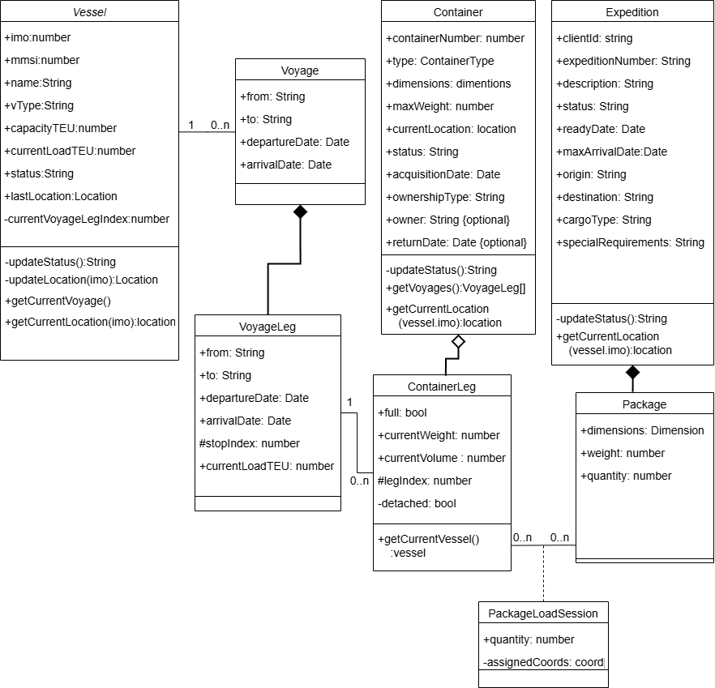
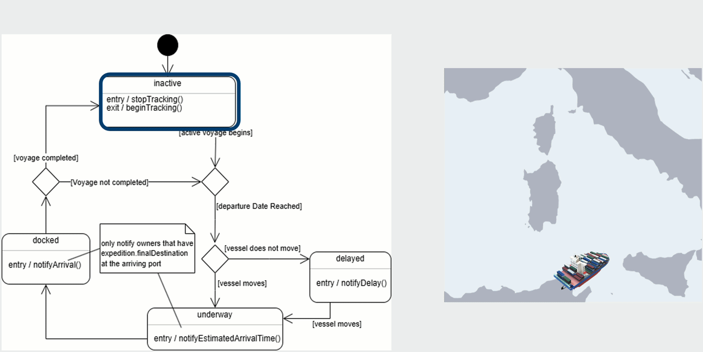

Smart Container Logistics & Tracking System
Automated maritime expedition planning platform built for CTN – Compagnie
Tunisienne de Navigation. Replaces manual logistics coordination with real-time algorithmic
shipment candidate generation — a client submits a shipment request and the system finds, packs, and
scores viable routes without agent involvement.
Centralized hub for clients and agents to manage shipments, schedule vessel voyages,
manage and visualise container state (internal packing and scheduled routes) at any given time (past
and future).
Live demo → logistics-platform-mvp.vercel.app
Also contains a ▶ 1-minute overview: transshipment, auto-assignment, routing, and
container packing…
The Core Challenge
Shipping containers are not simply "sent from A to B." A single expedition may:
- Share a container with other clients' cargo, where each group must stay together across every port
- Transfer between different vessels at intermediate ports (transshipment) to reach its destination
- Compete for container space that is partially occupied by cargo loaded in said port at an earlier
time
All of this was previously handled manually — agents checking availability, estimating
fit, and selecting routes from experience. The platform automates the entire decision chain.
Architectural Decisions
Two structural decisions made during design are what allow the algorithms to function.
Both required moving away from a naive model that seemed reasonable but collapsed under real
operational constraints.
I. The Naive Model
The Problem


Figure 1 · Voyage and Container Legs
Sequence Example.
The natural first instinct ties a container directly to a voyage.
This breaks immediately under real conditions:
- Transshipment is unrepresentable. A container travelling Tunisia → Italy on
vessel 1, then Italy → France on vessel 2 cannot belong to both voyages. The model has no answer for
which one it belongs to.
- Position within a journey is unknown. No intermediate stops exist — only a
departure and arrival. The system knows "container is on voyage X" but not "container is between
port 2 and port 3 right now."
- Partial boarding is impossible. A container that joins a vessel mid-route or
disembarks before the final port cannot be expressed — it either belongs to the whole voyage or not
at all.
II. Voyage → VoyageLegs, Container → ContainerLegs
.png)
Figure 2 · partial ERD for Voyage and
containerLeg.
The Voyage entity was split into VoyageLegs — each a single
port-to-port segment. A voyage Tunisia → Italy → France becomes two legs. This gives the system
precise control over departure and arrival times at every intermediate stop, and makes it possible to
board or disembark a container at any point.
To mirror this on the container side, ContainerLeg tracks each segment
a container actually rides. A container transshipping between two vessels gets two ContainerLegs
mapped to two different VoyageLegs on two different voyages. A container that only joins a vessel at
an intermediate port starts its ContainerLeg sequence from that stop.
◈ Pathfinding — Time-Constrained Recursive Search
Standard graph pathfinding does not apply here. The routing graph is dynamic — an edge
only exists if the voyage leg departs after the container arrives at that port. Shortest
distance is irrelevant; a geographically short route may be completely infeasible if the connecting
vessel has already left.
The algorithm is a custom recursive search:
- From the origin port and ready date, fetch all voyage legs departing after arrival time — unused
voyages only, preventing cycles
- If a voyage reaches the destination directly, record the full leg sequence as a valid route
- Otherwise expand into each intermediate stop, incrementing a transshipment counter
- Prune any branch exceeding the maximum allowed transshipment count
The result is every time-feasible route a container can actually take, not theoretical
shortest paths. Each route is a real sequence of schedulable voyage legs.
III. Packages, Expeditions, and ContainerLoadSession
Packages are not stored inside an expedition record. An expedition describes
what needs to be shipped — destination, timing, cargo type. The where is tracked
separately.
ContainerLoadSession is the join entity that handles this. It links a
package to a specific range of ContainerLegs and stores:
- The quantity of that package type in this container on these legs
- The exact 3D coordinates assigned to each unit by the packing heuristic
The original package record stays untouched. Two sessions reference it independently.
.png)
Figure 4 · partial ERD for
containerLoadSession
The problem this solves: a package group of 18 units may need to split across two
containers — 8 in C4 and 10 in C5 — because neither container alone has enough remaining space. With
packages tied directly to an expedition, representing this split requires duplicating or mutating the
package record. Neither is clean.
.png)

Figure 5 · placed packages example UML
Object Diagram
This also enables container reuse. Before assigning any expedition, the system checks
whether all future legs of a candidate container have empty load sessions. The
current leg being empty is not enough — a container committed to cargo on a future leg is not
available, even if it looks free today.

Figure 6 · containerLoadSession impact
on container assignment
◈ 3D Container Packing — S-DBLF Heuristic
With ContainerLoadSession normalising the relationship between packages and container
legs, the packing heuristic can treat every unit — from existing sessions and new packages alike — as
identical objects in a shared space.
The implementation uses the S-DBLF (Simple Deepest Bottom-Left
with Fill) heuristic for the offline 3D Bin Packing Problem. Packages are sorted by
descending volume, then placed one by one at the deepest, leftmost, back-most feasible position. After
each placement, three new candidate positions are generated at the boundaries of the placed box, and
the used position is removed.
The heuristic runs twice per expedition:
- Existing sessions are unfolded into individual units tagged
origin: existing, placed
first, coordinates frozen
- New packages are unfolded into units tagged
origin: new, placed into remaining space
- Results are re-grouped by session ID — the Heuristic stays pure (for future Heuristic nature
changes), business logic lives in the wrapper

Figure 7 · Pseudo-code for the S-DBLF
packing methodt
A Hybrid Genetic Algorithm for Packing in 3D with Deepest Bottom Left with Fill
Method.
Karabulut, Korhan & İnceoğlu, Mustafa. (2004).
Advances in Information Systems. 3261. 441-450. 10.1007/978-3-540-30198-1_45.
researchgate.net
Try it live — the demo lets you add packages with custom dimensions and
watch the heuristic place them in real time inside a 3D container.
Global Class Diagram
View full system class diagram

Live Vessel Tracking & Delay Detection
Vessel positions are fetched via the AIS (Automatic Identification System)
API using each vessel's IMO number. Location data is cached on the vessel document and
refreshed only if the last update is older than five minutes.
Delay detection checks whether the vessel's live AIS position diverges from its
scheduled location for the current leg. One edge case handled explicitly: if the last AIS ping was
received before the leg's departure date, the vessel is at port waiting — not delayed. Without this
guard, every vessel sitting at dock before departure would trigger a false alert.

When a delay is confirmed, notifications go to all clients with active expeditions on
that vessel. Arrival notifications go only to clients whose final destination is the arriving port —
transshipment clients are not notified until their own last leg completes.
Reactive Assignment
The assignment itself passes through many phases, such as looking for existing assigned
containers and tryToPack before looking for new routes that would require an empty,
not-used container. This method is triggered both when a user requests shipment plans and
automatically.
When a new container or voyage is added by the agent, the system immediately
re-evaluates all pending expeditions. If the new resource opens a valid plan for a waiting client,
they receive a notification and can confirm from their dashboard — no agent involvement required,
apart from adding a schedule or a container (either bought or leased), or if the agent changed its
availability.
▶ Pending expedition flow — no available route on submission, agent adds voyage,
client receives notification on the "about this app" section of the demo
Platform Tour
▶ Admin side — fleet management, voyage scheduling, per-leg container state, live
vessel map on the "about this app" section of the demo, or log in yourself as an agent using an
already existing account: logistics-platform-mvp.vercel.app/auth/signin
Test Coverage
The heuristic has a dedicated test suite covering:
- Single and multi-package placement
- Placement adjacent to existing frozen packages
- Exact boundary fits and overflow rejection
- Zero and negative dimension validation
- A fill-drain cycle: 1000 units placed one by one into a 10×10×10 container, all 1000 coordinates
verified unique, the 1001st confirmed to fail
- L-shaped gap detection — correctly rejects a package that would require non-rectangular remaining
space
Candidate generation is covered by an integration test using
MongoMemoryServer — a real Mongoose instance seeded with voyage and container data,
validating the full assignment pipeline end to end.
Stack
| Layer |
Technology |
| Frontend |
Angular 17, TypeScript, Bootstrap, Three.js |
| Backend |
Node.js, Express.js, TypeScript |
| Database |
MongoDB, Mongoose |
| Auth |
JWT, role-based AuthGuard middleware |
| Tracking |
AIS API (myshiptracking.com) |
| Testing |
Jest, MongoMemoryServer |
| Deployment |
Vercel (frontend) |
Final-year Bachelor's internship — Faculty of Sciences of Monastir (FSM) × CTN –
Compagnie Tunisienne de Navigation.